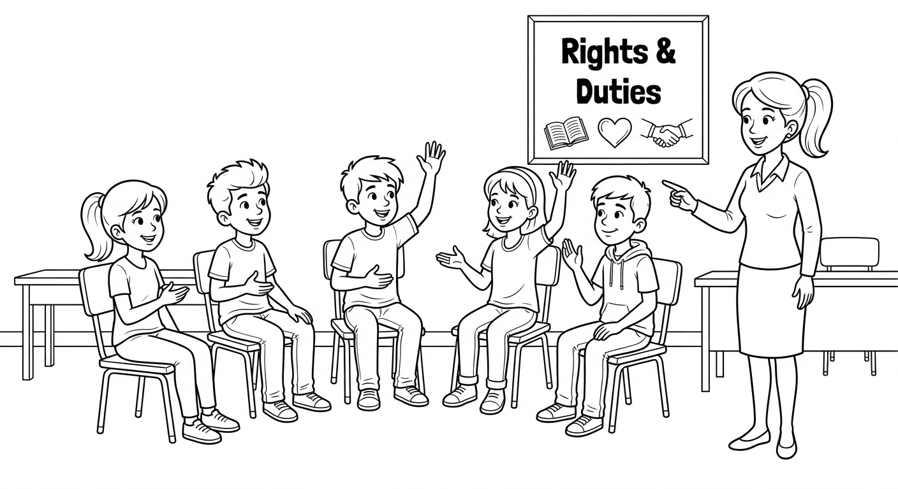
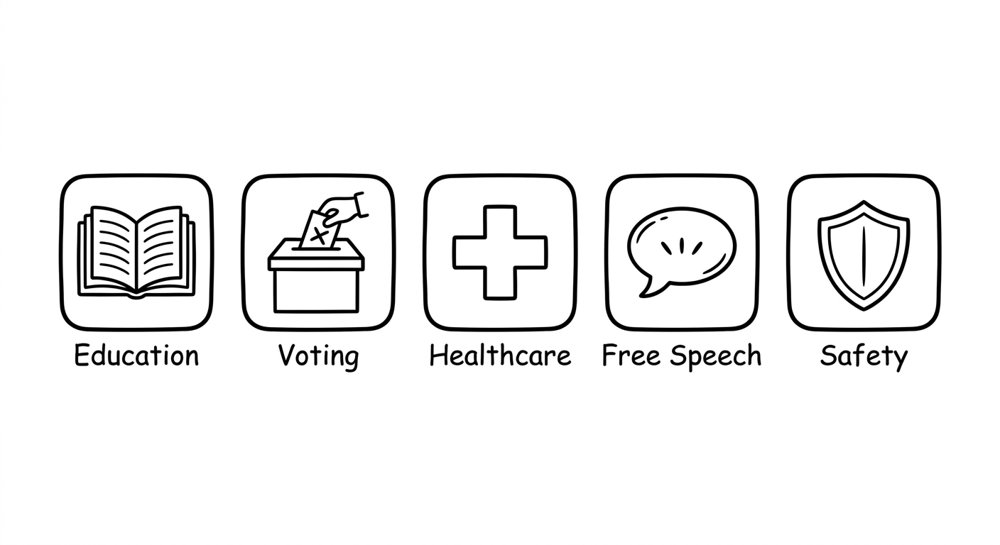
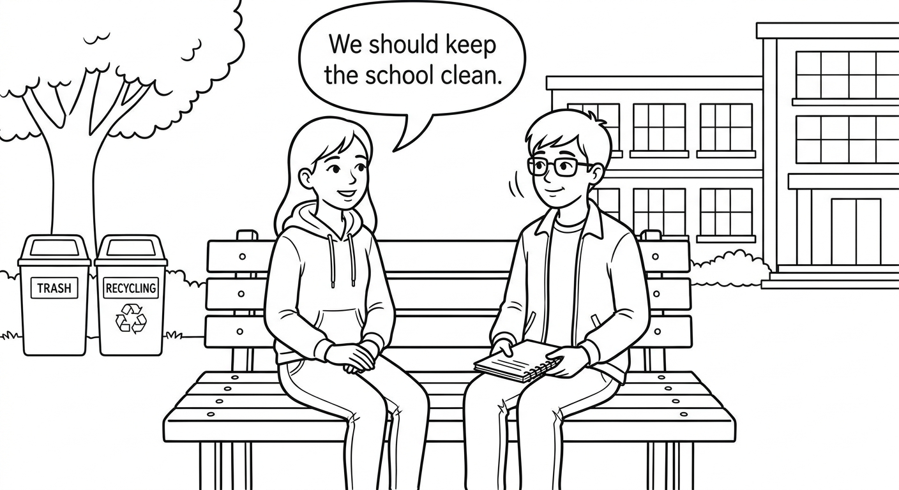
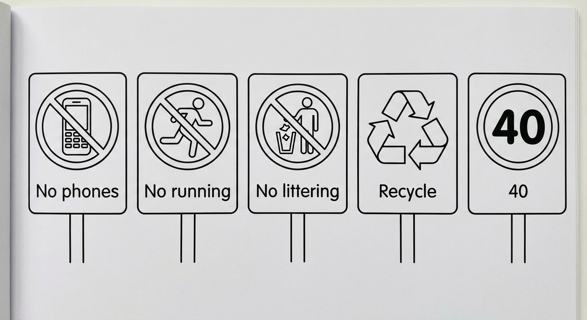
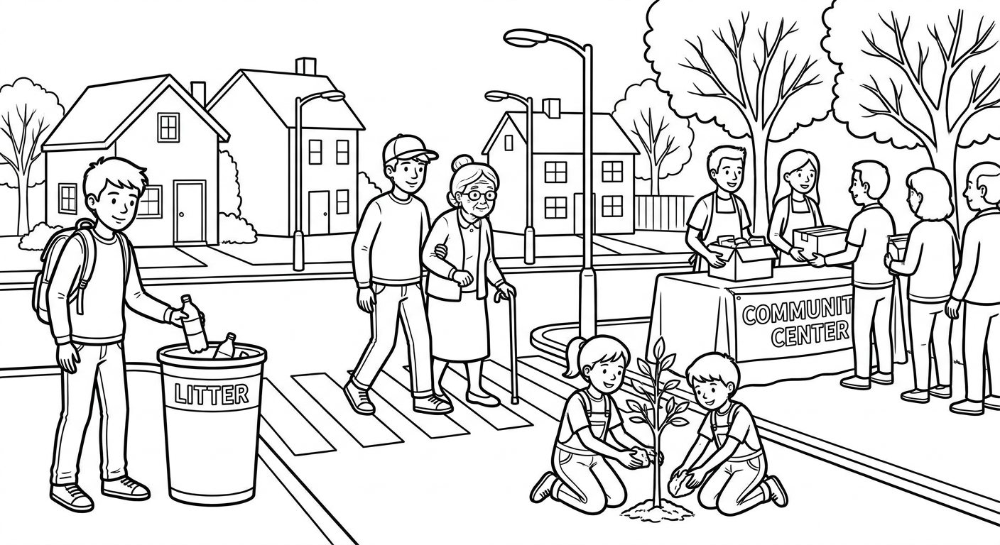

Rights and Duties: Modal Verbs in Context
In this chapter, you will use modal verbs to talk about rights, duties, responsibilities, rules, and prohibitions. You will learn civic vocabulary and practice applying can, must, should, have to, mustn't, and can't in real-world situations related to school, community, and citizenship.

Rights: What You CAN Do
We use can to express:
- Ability: something you are able to do. I can speak English.
- Permission (informal): something you are allowed to do. You can use the library after class.
We use have the right to + base verb for formal or legal rights:
- Everyone has the right to education.
- Citizens have the right to vote.
| Form | Structure | Example |
|---|---|---|
| Can (informal) | Subject + can + base verb | You can express your opinion. |
| Have the right to (formal) | Subject + have/has the right to + base verb | Everyone has the right to healthcare. |
| Negative (can't) | Subject + can't + base verb | You can't drive without a license. |
| English | Português | Example Sentence |
|---|---|---|
| right | direito | Education is a fundamental right. |
| vote | votar / voto | In Brazil, citizens can vote at 16. |
| education | educação | Everyone has the right to education. |
| freedom | liberdade | Freedom of speech is important. |
| opinion | opinião | You can express your opinion freely. |
| equality | igualdade | Equality means everyone is treated fairly. |
| healthcare | saúde / assistência médica | All citizens have the right to healthcare. |
| safety | segurança | Children have the right to safety. |
| privacy | privacidade | You have the right to privacy. |
Rights in Context
You can express your opinion in class.
Você pode expressar sua opinião na aula.
Everyone has the right to education.
Todos têm direito à educação.
Students can use the school library for free.
Os alunos podem usar a biblioteca da escola de graça.
Citizens have the right to vote in elections.
Os cidadãos têm direito a votar nas eleições.
You can ask questions during the lesson.
Você pode fazer perguntas durante a aula.
Every child has the right to safety and protection.
Toda criança tem direito à segurança e proteção.
Use "can" for everyday, informal permissions and abilities: "You can sit here." Use "have the right to" for formal, legal, or constitutional rights: "Everyone has the right to a fair trial." In many situations, both are possible, but "have the right to" sounds more serious and official.
Em português: "Can" funciona como "pode/consegue" (informal), enquanto "have the right to" funciona como "tem direito a" (formal/legal).

Suggested time: 25 minutes
Warm-up activity (5 min): Ask students: "What rights do you think are most important?" Write their answers on the board in English. Help with vocabulary as needed.
Activity: Give students a list of statements and ask them to classify each as "informal permission (can)" or "formal right (have the right to)." For example: "use the computer lab" (can) vs. "access free education" (have the right to).
L1 connection: Remind students that in Portuguese, "direito" is used for legal rights, similar to "have the right to" in English. The word "can" covers both "poder" (permission) and "conseguir" (ability).
Complete each sentence with can or the correct form of have the right to. Think about whether the context is informal or formal/legal.
Match each right on the left with its correct description on the right. Write the letter in the box.
Duties and Responsibilities: What You MUST / SHOULD Do
We use must and have to for obligations (things that are necessary):
- Must: strong personal obligation or rules. You must respect other people.
- Have to: external obligation (someone else decided). Students have to wear a uniform.
We use should for advice and recommendations (it's a good idea, but not obligatory):
- You should help your neighbors. (It's good advice, but not a rule.)
- Citizens should participate in community events.
| Modal | Meaning | Português | Example |
|---|---|---|---|
| must | strong obligation / rule | deve / precisa (obrigação forte) | You must obey the law. |
| have to | external obligation / necessity | tem que / precisa | We have to pay taxes. |
| has to | external obligation (he/she/it) | tem que / precisa | She has to finish her homework. |
| should | advice / recommendation | deveria | You should recycle. |
Important difference: Must does NOT change with the subject (She must go), but have to changes: he/she/it has to.
| English | Português | Example Sentence |
|---|---|---|
| responsibility | responsabilidade | It is our responsibility to keep the school clean. |
| respect | respeitar / respeito | Students must respect their teachers. |
| obey | obedecer | Everyone must obey the traffic laws. |
| follow (rules) | seguir (regras) | You have to follow the school rules. |
| protect | proteger | We should protect the environment. |
| community | comunidade | We must help our community. |
| citizen | cidadão / cidadã | A good citizen follows the law. |
| contribute | contribuir | Everyone should contribute to a better society. |
| participate | participar | Citizens should participate in elections. |
Duties and Responsibilities in Context
Students must respect their teachers and classmates.
Os alunos devem respeitar seus professores e colegas.
Citizens should vote in every election.
Os cidadãos deveriam votar em toda eleição.
We have to follow the school rules.
Nós temos que seguir as regras da escola.
Drivers must obey the speed limit.
Os motoristas devem obedecer o limite de velocidade.
We should protect the environment and recycle.
Nós deveríamos proteger o meio ambiente e reciclar.
Rafael has to do his homework before playing video games.
Rafael tem que fazer o dever de casa antes de jogar videogame.
Dialogue: Responsibilities at School and in the Community

In English, we often say "rights come with responsibilities". This means that for every right you have, there is a duty. For example: You have the right to education, but you must respect your teachers. You can express your opinion, but you should listen to others too.
Em português: "Direitos vêm com responsabilidades." Para cada direito que temos, existe um dever correspondente.
Suggested time: 30 minutes
Dialogue activity (10 min): Have students read the dialogue in pairs. Ask them to underline all the modal verbs they find (should, must, have to) and classify each as "obligation" or "recommendation."
Discussion (5 min): Ask students: "What are your responsibilities at school? At home? In your community?" Encourage them to use must/should/have to in their answers.
L1 note: In Portuguese, "deve" can mean both "must" (obligation) and "should" (recommendation). Help students understand that in English these have different levels of strength: must > have to > should.
Complete each sentence with must, should, or the correct form of have to. Think about whether it is a strong obligation, an external rule, or a recommendation.
Rewrite each sentence using the modal verb indicated in parentheses. Keep the same meaning.
Example: It is necessary for students to study. (have to) → Students have to study.
It is obligatory for drivers to stop at red lights. (must)
Drivers must stop at red lights.It is a good idea for people to recycle. (should)
People should recycle.It is necessary for Ana to bring her books to class. (has to)
Ana has to bring her books to class.It is recommended that citizens vote. (should)
Citizens should vote.It is obligatory for everyone to respect the rights of others. (must)
Everyone must respect the rights of others.It is necessary for Thiago to take the bus to school. (has to)
Thiago has to take the bus to school.Rules and Prohibitions: What You MUSTN'T / CAN'T Do
We use mustn't and can't for prohibitions (things you are NOT allowed to do):
- Mustn't: it is forbidden; it is against the rules. You mustn't cheat on exams.
- Can't: it is not allowed; it is not possible due to rules. You can't park here.
Be careful! Don't have to is very different from mustn't:
- Don't have to: it is NOT necessary (you can choose). You don't have to wear a tie. (You can if you want.)
- Mustn't: it is FORBIDDEN (you cannot do it). You mustn't wear sandals in the laboratory. (It's prohibited.)
| Modal | Meaning | Português | Example |
|---|---|---|---|
| mustn't | prohibition (forbidden) | não deve / é proibido | You mustn't smoke here. |
| can't | not allowed / not possible | não pode / não é permitido | You can't enter without a badge. |
| don't have to | not necessary (optional) | não precisa / não é necessário | You don't have to come early. |
Rules and Prohibitions in Different Contexts
Students mustn't use their phones during class.
Os alunos não devem usar seus celulares durante a aula.
You can't run in the hallways.
Você não pode correr nos corredores.
People mustn't throw trash on the street.
As pessoas não devem jogar lixo na rua.
You can't make loud noise after 10 PM in residential areas.
Você não pode fazer barulho alto depois das 22h em áreas residenciais.
You mustn't pollute rivers and lakes.
Você não deve poluir rios e lagos.
You don't have to bring lunch. The school provides meals.
Você não precisa trazer almoço. A escola fornece refeições.

This is one of the most common mistakes for Portuguese speakers:
- You mustn't park here. = It is FORBIDDEN. You will get a fine. (Você NÃO PODE estacionar aqui. É proibido.)
- You don't have to park here. = It is NOT NECESSARY. You can park somewhere else. (Você não PRECISA estacionar aqui. Pode estacionar em outro lugar.)
Breaking rules has consequences! If you do something you mustn't do, there may be a penalty, fine, or punishment.
Suggested time: 25 minutes
Activity: Create cards with different scenarios. Students pick a card and decide if the answer is "mustn't," "can't," or "don't have to." Example: "Wearing a helmet on a motorcycle" (must/have to) vs. "Wearing a helmet on a bicycle" (should, but in some places have to) vs. "Wearing a hat to school" (don't have to).
Critical distinction: Spend extra time on the difference between "mustn't" (forbidden) and "don't have to" (not necessary). This is the most commonly confused pair. Use concrete examples: "You mustn't steal" (forbidden) vs. "You don't have to buy that" (not necessary). Write several pairs on the board for comparison.
L1 note: In Portuguese, "não deve" can be ambiguous between "shouldn't" and "mustn't." Help students see that "mustn't" in English is always a strong prohibition.
Complete each sentence with mustn't, can't, or don't/doesn't have to. Remember: mustn't/can't = forbidden; don't have to = not necessary.
Select the best option to complete each sentence.
You _______ be quiet in the library. People are studying.
b) mustYou _______ smoke near the school. It is prohibited.
c) mustn'tIt's Saturday. Camila _______ wake up early today.
b) doesn't have toEveryone _______ contribute to keeping the environment clean. It's our responsibility.
a) shouldStudents _______ use their phones during tests. The teacher will take them away.
c) can'tReading & Writing: Being a Good Citizen

Mateus is a 16-year-old student who lives in Belo Horizonte, Minas Gerais. He studies at a public school in his neighborhood and is very active in his community. Mateus believes that being a good citizen is not just about knowing your rights. It is also about fulfilling your duties and responsibilities.
At school, Mateus knows that he has the right to a quality education. He can ask questions, participate in class discussions, and use the school library. But he also understands that rights come with responsibilities. He must respect his teachers and classmates. He has to follow the school rules, such as wearing a uniform and arriving on time. He should also help keep the school clean and organized.
In his community, Mateus is a volunteer at a local recycling center. He believes that everyone should contribute to protecting the environment. "We mustn't throw trash on the streets," he says. "We have to separate our recyclable materials, and we should encourage our neighbors to do the same." Every Saturday morning, Mateus and his friends collect recyclable materials in their neighborhood.
Mateus also thinks that citizens must obey the law and respect other people's rights. "You can't discriminate against anyone because of their race, gender, or religion," he explains. "Everyone has the right to equality and respect. We must treat all people fairly."
His mother, Dona Lucia, is a community leader. She organizes meetings where neighbors can discuss problems and find solutions together. She always says, "We don't have to agree on everything, but we must listen to each other. Good citizens should participate in community decisions."
Mateus wants to study law at university in the future. He dreams of becoming a lawyer who fights for people's rights. "I believe that every person can make a difference," he says. "We should all try to be good citizens, every day."
Read each sentence. Write T (True) or F (False) based on the text about Mateus.
Answer each question in a complete sentence based on the text about Mateus.
What school rules does Mateus have to follow?
He has to follow the school rules, such as wearing a uniform and arriving on time.What does Mateus think people mustn't do with trash?
He thinks people mustn't throw trash on the streets.According to Mateus, why can't people discriminate against others?
Because everyone has the right to equality and respect. We must treat all people fairly.What does Mateus's mother, Dona Lucia, do for the community?
She organizes meetings where neighbors can discuss problems and find solutions together. She is a community leader.Write a paragraph (8-12 sentences) about your rights and duties as a student. Follow the guidelines below:
- Mention at least 2 rights you have as a student (use can or have the right to).
- Mention at least 2 duties you have (use must or have to).
- Mention at least 2 recommendations for being a good student (use should).
- Mention at least 1 prohibition at your school (use mustn't or can't).
Example beginning:
As a student, I have the right to a quality education. I can ask questions and participate in class. However, I must respect my teachers and classmates. I also have to arrive on time and wear my uniform. I should study hard and do my homework every day. At my school, students can't use their phones during class...
Now write your paragraph:
- Start with your rights, then move to your duties, then your recommendations, and finally a prohibition.
- Use connectors like also, however, and, but, and because to connect your ideas.
- Remember: must/should + base verb (no "to"!). Have to uses "to" and changes with the subject (has to for he/she/it).
- Check your work: did you use at least 4 different modal verbs?
Suggested time: 35 minutes (10 min reading, 10 min comprehension exercises, 15 min writing)
Pre-reading activity (5 min): Ask students: "What does it mean to be a good citizen? What are some examples of good citizenship?" Write key ideas on the board.
Reading strategy: Have students read the text once quickly for general understanding. Then ask them to read it again and underline all modal verbs they find. Classify each as: right (can/have the right to), duty (must/have to), recommendation (should), or prohibition (mustn't/can't).
Writing assessment criteria:
- Correct use of at least 4 different modal verbs
- At least 2 rights, 2 duties, 2 recommendations, and 1 prohibition
- Correct modal verb structure (modal + base verb)
- 8-12 complete, coherent sentences
- Use of connectors (also, however, and, but, because)
Peer review: After writing, have students swap papers. Can they identify all the modal verbs their partner used? Are they used correctly? This reinforces the grammar concepts from the chapter.
Extension activity: Stronger students can create a "Class Charter" or "Student Rights and Duties Poster" using all the modals from this chapter. Display the best ones in the classroom.
Chapter 3 - Answer Key
Exercise 1: Can or Have the Right to?
Exercise 2: Match the Rights to Their Descriptions
Exercise 3: Must, Should, or Have to?
Exercise 4: Rewrite Using Modal Verbs
Exercise 5: Mustn't, Can't, or Don't Have to?
Exercise 6: Choose the Correct Modal Verb
Exercise 7: True or False
Exercise 8: Answer the Questions
Exercise 9: Write About Your Rights and Duties as a Student
Answers will vary. Check for:
- Correct use of at least 4 different modal verbs (can/have the right to, must/have to, should, mustn't/can't)
- At least 2 rights mentioned with "can" or "have the right to"
- At least 2 duties mentioned with "must" or "have to"
- At least 2 recommendations with "should"
- At least 1 prohibition with "mustn't" or "can't"
- Correct modal verb structure (modal + base verb, no "to" after must/should/can)
- 8-12 complete, coherent sentences
- Use of connectors (also, however, and, but, because)
Sample paragraph:
- As a student, I have the right to a quality education. I can use the library and participate in class activities. However, I must respect my teachers and classmates. I have to follow the school rules, like wearing a uniform. I should study hard every day and always do my homework. I should also help keep the school clean. At my school, students can't use their phones during class. I believe that being a good student is important because education helps us build a better future.